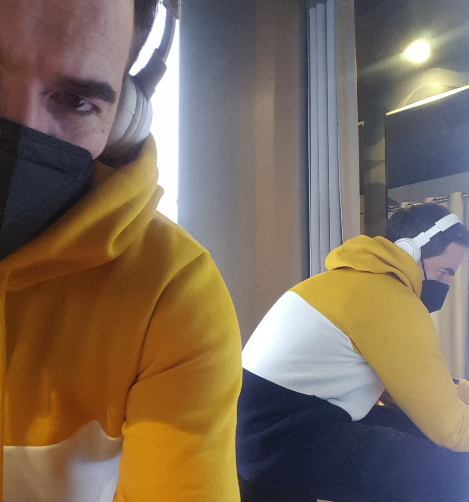

Dátum narodenia: 1985-05-30
Miesto narodenia: Košice, Slovensko
Od roku 1999 sa aktívne venuje DJ-ingu a hraniu na hudobných nástrojoch. Jeho snom je mať vlastné štúdio, kde môže kľudne komponovať nadčasovú hudbu pre ostatných. V online priestore chce preraziť nielen na Slovensku, ale aj v iných krajinách, pretože tvorba ovplyvňuje najrozmanitejšie ľudské duše. Využíva zvuky z prírody a jej okolia a tým zapája dynamický štýl, nové technológie do svojich mixov. Miluje hudbu a nevie si predstaviť čo by ho mohlo odradiť od produkcie...